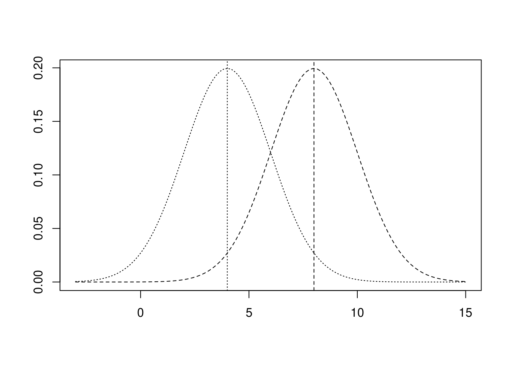
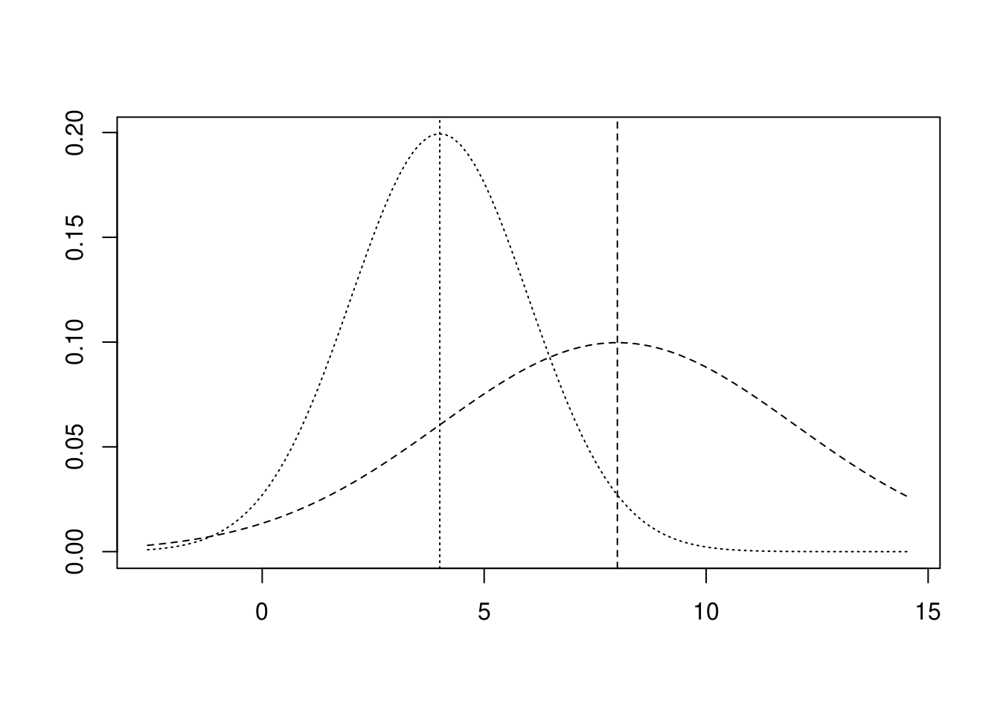

第4講 そのデータは「月並み」か「特殊」か？ 標準偏差で評価する
4.4 加工されたデータの平均値と標準偏差
以下のデータに一定の加工を加えた際に平均値や標準偏差がどのように変化するかを見てみましょう。
x <- read.csv(file = "../data/P49_図表4-5.csv")
xデータに一定数を加えた場合
それぞれに\(4\)を加える。
x %>%
dplyr::mutate(Y = X + 4)mean <- x %>%
dplyr::mutate(Y = X + 4) %>%
dplyr::summarise(X = mean(X), Y = mean(Y))
mean偏差
dev <- x %>%
dplyr::mutate(Y = X + 4) %>%
dplyr::mutate(X = X - mean$X, Y = Y - mean$Y)
dev分散
var <- dev %>%
dplyr::summarize(X = sum(X ^ 2) / length(X), Y = sum(Y ^ 2) / length(Y))
var標準偏差
sqrt(var)以上のようにデータに一定数を加えると平均値は加えた一定値の分だけ大きくなりますが、他の統計量は変化していないことが分かります。これを正規分布で図示すると下図のようになります。
curve(dnorm(x, mean = 4, sd = 2), -3, 15, lty = 3, xlab = "", ylab = "")
abline(v = 4, lty = 3)
curve(dnorm(x, mean = 8, sd = 2), -3, 15, add = TRUE, lty = 2, xlab = "", ylab = "")
abline(v = 8, lty = 2)
データに一定数を乗じた場合
それぞれに\(2\)を乗ずる。
x %>%
dplyr::mutate(Y = X * 2)mean <- x %>%
dplyr::mutate(Y = X * 2) %>%
dplyr::summarise(X = mean(X), Y = mean(Y))
mean偏差
dev <- x %>%
dplyr::mutate(Y = X * 2) %>%
dplyr::mutate(X = X - mean$X, Y = Y - mean$Y)
dev分散
var <- dev %>%
dplyr::summarize(X = sum(X ^ 2) / length(X), Y = sum(Y ^ 2) / length(Y))
var標準偏差
sqrt(var)以上のようにデータに一定数を乗じると平均値は乗じた一定値の分だけ大きくなり、他の統計量も乗じた一定値の分だけ大きくなっていることが分かります。これを正規分布で図示すると下図のようになります。
curve(dnorm(x, mean = 4, sd = 2), -3, 15, lty = 3, xlab = "", ylab = "")
abline(v = 4, lty = 3)
curve(dnorm(x, mean = 8, sd = 4), -3, 15, add = TRUE, lty = 2,
xlab = "", ylab = "")
abline(v = 8, lty = 2)
| 加工方法 | 平均値 | 標準偏差 | 備考 |
|---|---|---|---|
| 無加工（元データ\(x\)） | \(\bar{x}\) | \(SD\) | |
| 定数の加算(\(x + k\)) | \(\bar{x} + k\) | \(SD\) | 変化するのは平均値のみ |
| 定数の乗算(\(x \times k\)) | \(\bar{x} \times k\) | \(SD \times k\) | 平均値・標準偏差ともに変化 |
\(k\): 任意の実数
標準偏差何個分となるようにデータを加工する効果
ここで説明されているのは「正規化」です。
x <- read.csv(file = "../data/P49_図表4-5.csv")
x上記のP49のデータは、平均値\(4\)、標準偏差\(2\)ですので、\((データ - 平均値) \div 標準偏差\)を計算すると下記のようになります。
x %>%
dplyr::mutate(dev = (X - (sum(X) / length(X))), # 偏差
nX = dev / sqrt(sum(dev ^ 2) / length(dev))) # 正規化値 nXの平均値と標準偏差は以下のように\(0\)と\(1\)になることが分かります。
x %>%
dplyr::mutate(nX = (X - 4) / 2) %>%
dplyr::summarise(mean = sum(nX) / length(nX),
sd = sqrt(sum((nX - mean) ^ 2) / length(nX)))追加問題
P16の身長データを正規化（\((\mbox{データ} - \mbox{平均値}) \div \mbox{標準偏差}\)）してみましょう。
解答例
x <- "../data/P16_図表1-1 .csv" %>%
readr::read_csv(col_names = FALSE, show_col_types = FALSE) %>%
tidyr::pivot_longer(cols = dplyr::starts_with("X"),
names_to = "name", values_to = "value") %>%
dplyr::arrange(name) %>%
dplyr::select(height = value) %>%
dplyr::mutate(normalized = scale(height))
x正規化前後の平均値と標準偏差を比べると下記のようになります。
x %>%
dplyr::summarise(mean = sum(height) / length(height),
sd = sqrt(sum((height - mean)^ 2) / length(height)))x %>%
dplyr::summarise(mean = sum(normalized) / length(normalized),
sd = sqrt(sum((normalized - mean)^ 2) / length(normalized)))